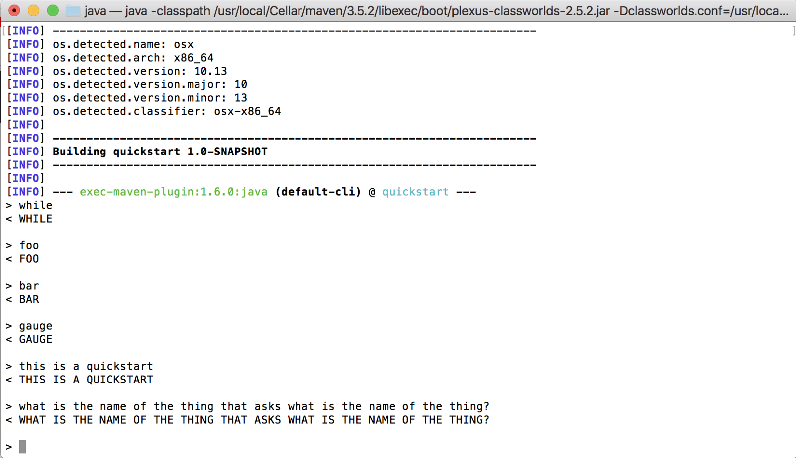

By the end of this tutorial, we will do these four things to obtain metrics using OpenCensus:
ViewRequirements:
We will first create our project directory, add our pom.xml, and our source code.
mkdir repl-app
cd repl-app
touch pom.xml
mkdir -p src/main/java/io/opencensus/metrics/quickstart
touch src/main/java/io/opencensus/metrics/quickstart/Repl.java
Put this in your newly generated pom.xml file:
<project xmlns="http://maven.apache.org/POM/4.0.0" xmlns:xsi="http://www.w3.org/2001/XMLSchema-instance"
xsi:schemaLocation="http://maven.apache.org/POM/4.0.0 http://maven.apache.org/maven-v4_0_0.xsd">
<modelVersion>4.0.0</modelVersion>
<groupId>io.opencensus.metrics.quickstart</groupId>
<artifactId>quickstart</artifactId>
<packaging>jar</packaging>
<version>1.0-SNAPSHOT</version>
<name>quickstart</name>
<url>http://maven.apache.org</url>
<properties>
<project.build.sourceEncoding>UTF-8</project.build.sourceEncoding>
<opencensus.version>0.15.0</opencensus.version> <!-- The OpenCensus version to use -->
</properties>
<build>
<extensions>
<extension>
<groupId>kr.motd.maven</groupId>
<artifactId>os-maven-plugin</artifactId>
<version>1.5.0.Final</version>
</extension>
</extensions>
<pluginManagement>
<plugins>
<plugin>
<groupId>org.apache.maven.plugins</groupId>
<artifactId>maven-compiler-plugin</artifactId>
<version>3.7.0</version>
<configuration>
<source>1.8</source>
<target>1.8</target>
</configuration>
</plugin>
<plugin>
<groupId>org.codehaus.mojo</groupId>
<artifactId>appassembler-maven-plugin</artifactId>
<version>1.10</version>
<configuration>
<programs>
<program>
<id>Repl</id>
<mainClass>io.opencensus.metrics.quickstart.Repl</mainClass>
</program>
</programs>
</configuration>
</plugin>
</plugins>
</pluginManagement>
</build>
</project>
Put this in src/main/java/io/opencensus/metrics/quickstart/Repl.java:
package io.opencensus.metrics.quickstart;
import java.io.BufferedReader;
import java.io.IOException;
import java.io.InputStreamReader;
public class Repl {
public static void main(String ...args) {
BufferedReader stdin = new BufferedReader(new InputStreamReader(System.in));
while (true) {
try {
readEvaluateProcessLine(stdin);
} catch (IOException e) {
System.err.println("Exception "+ e);
}
}
}
private static String processLine(String line) {
return line.toUpperCase();
}
private static void readEvaluateProcessLine(BufferedReader in) throws IOException {
System.out.print("> ");
System.out.flush();
String line = in.readLine();
String processed = processLine(line);
System.out.println("< " + processed + "\n");
}
}
To install required dependencies, run this from your project's root directory:
# Make sure to be in your project's root directory
mvn install
The Repl application takes input from users, converts any lower-case letters into upper-case letters, and echoes the result back to the user, for example:
> foo
< FOO
We will instrument this application to collect metrics, such as:
Let's first run the application and see what we have.
mvn exec:java -Dexec.mainClass=io.opencensus.metrics.quickstart.Repl
You will be given a text prompt. Try typing in a lowercase word and hit enter to receive the uppercase equivalent.
You should see something like this after a few tries:

To exit out of the application, hit ctrl + c on your keyboard.
From here on out, we will be rewriting sections of src/main/java/io/opencensus/metrics/quickstart/Repl.java and pom.xml.
You can recompile and run the application after editing it by running this command:
mvn install
To enable metrics, we'll declare the dependencies in your pom.xml file. Add the following snippet of code after the <properties>...</properties> node.
<dependencies>
<dependency>
<groupId>io.opencensus</groupId>
<artifactId>opencensus-api</artifactId>
<version>${opencensus.version}</version>
</dependency>
<dependency>
<groupId>io.opencensus</groupId>
<artifactId>opencensus-impl</artifactId>
<version>${opencensus.version}</version>
</dependency>
</dependencies>
We will now be importing modules into src/main/java/io/opencensus/metrics/quickstart/Repl.java. Append the following snippet after the existing import statements:
import io.opencensus.common.Scope;
import io.opencensus.stats.Stats;
import io.opencensus.stats.Measure;
import io.opencensus.stats.Measure.MeasureLong;
import io.opencensus.stats.Measure.MeasureDouble;
import io.opencensus.stats.Stats;
import io.opencensus.stats.StatsRecorder;
import io.opencensus.stats.View;
import io.opencensus.tags.Tags;
import io.opencensus.tags.Tagger;
import io.opencensus.tags.TagContext;
import io.opencensus.tags.TagContextBuilder;
import io.opencensus.tags.TagKey;
import io.opencensus.tags.TagValue;
First, we will create the variables needed to later record our metrics. Place the following snippet on the line after public class Repl {:
// The latency in milliseconds
private static final MeasureDouble M_LATENCY_MS = MeasureDouble.create("repl/latency", "The latency in milliseconds per REPL loop", "ms");
// Counts/groups the lengths of lines read in.
private static final MeasureLong M_LINE_LENGTHS = MeasureLong.create("repl/line_lengths", "The distribution of line lengths", "By");
private static final Tagger tagger = Tags.getTagger();
private static final StatsRecorder statsRecorder = Stats.getStatsRecorder();
private static void recordStat(MeasureLong ml, Long n) {
statsRecorder.newMeasureMap().put(ml, n);
}
Now we will create the variable later needed to record extra text meta-data.
Insert the following snippet on the line before private static final Tagger tagger = Tags.getTagger();:
// The tag "method"
private static final TagKey KEY_METHOD = TagKey.create("method");
private static final TagKey KEY_STATUS = TagKey.create("status");
private static final TagKey KEY_ERROR = TagKey.create("error");
We will later use this tag, called KEY_METHOD, to record what method is being invoked. In our scenario, we will only use it to record that "repl" is calling our data.
We will now create helper functions to assist us with recording Tagged Stats. One will record a Long, another a Double, and finally an array of Doubles.
Insert the following snippet after private static void recordStat:
private static void recordTaggedStat(TagKey key, String value, MeasureLong ml, Long n) {
TagContext tctx = tagger.emptyBuilder().put(key, TagValue.create(value)).build();
try (Scope ss = tagger.withTagContext(tctx)) {
statsRecorder.newMeasureMap().put(ml, n).record();
}
}
private static void recordTaggedStat(TagKey key, String value, MeasureDouble md, Double d) {
TagContext tctx = tagger.emptyBuilder().put(key, TagValue.create(value)).build();
try (Scope ss = tagger.withTagContext(tctx)) {
statsRecorder.newMeasureMap().put(md, d).record();
}
}
private static void recordTaggedStat(TagKey[] keys, String[] values, MeasureDouble md, Double d) {
TagContextBuilder builder = tagger.emptyBuilder();
for (int i = 0; i < keys.length; i++) {
builder.put(keys[i], TagValue.create(values[i]));
}
TagContext tctx = builder.build();
try (Scope ss = tagger.withTagContext(tctx)) {
statsRecorder.newMeasureMap().put(md, d).record();
}
}
Finally, we'll hook our stat recorders in to main, processLine, and readEvaluateProcessLine:
while (true) {
long startTimeNs = System.nanoTime();
try {
readEvaluateProcessLine(stdin);
TagKey[] tagKeys = {KEY_METHOD, KEY_STATUS};
String[] tagValues = {"repl", "OK"};
recordTaggedStat(tagKeys, tagValues, M_LATENCY_MS,
sinceInMilliseconds(startTimeNs));
} catch (IOException e) {
System.err.println("EOF bye "+ e);
return;
} catch (Exception e) {
TagKey[] tagKeys = {KEY_METHOD, KEY_STATUS, KEY_ERROR};
String[] tagValues = {"repl", "ERROR", e.getMessage()};
recordTaggedStat(tagKeys, tagValues, M_LATENCY_MS,
sinceInMilliseconds(startTimeNs));
return;
}
}
private static String processLine(String line) {
long startTimeNs = System.nanoTime();
try {
return line.toUpperCase();
} finally {
TagKey[] tagKeys = {KEY_METHOD, KEY_STATUS};
String[] tagValues = {"repl", "OK"};
recordTaggedStat(tagKeys, tagValues, M_LATENCY_MS, sinceInMilliseconds(startTimeNs));
}
}
private static double sinceInMilliseconds(long startTimeNs) {
return (new Double(System.nanoTime() - startTimeNs))/1e6;
}
private static void readEvaluateProcessLine(BufferedReader in) throws IOException {
System.out.print("> ");
System.out.flush();
String line = in.readLine();
String processed = processLine(line);
System.out.println("< " + processed + "\n");
if (line != null && line.length() > 0) {
recordStat(M_LINE_LENGTHS, new Long(line.length()));
}
}
In order to analyze these stats, we'll need to aggregate our data with Views.
import java.util.ArrayList;
import java.util.Arrays;
import java.util.Collections;
import java.util.List;
import io.opencensus.stats.Aggregation;
import io.opencensus.stats.Aggregation.Distribution;
import io.opencensus.stats.BucketBoundaries;
import io.opencensus.stats.View.Name;
import io.opencensus.stats.ViewManager;
import io.opencensus.stats.View.AggregationWindow.Cumulative;
Append this code snippet as our last function inside of public class Repl:
private static void registerAllViews() {
// Defining the distribution aggregations
Aggregation latencyDistribution = Distribution.create(BucketBoundaries.create(
Arrays.asList(
// [>=0ms, >=25ms, >=50ms, >=75ms, >=100ms, >=200ms, >=400ms, >=600ms, >=800ms, >=1s,>=2s, >=4s, >=6s]
0.0, 25.0, 50.0, 75.0, 100.0, 200.0, 400.0, 600.0, 800.0, 1000.0, 2000.0, 4000.0, 6000.0)
));
Aggregation lengthsDistribution =
Distribution.create(BucketBoundaries.create(
Arrays.asList(
// [>=0B, >=5B, >=10B, >=20B, >=40B, >=60B, >=80B, >=100B, >=200B, >=400B, >=600B, >=800B, >=1000B]
0.0, 5.0, 10.0, 20.0, 40.0, 60.0, 80.0, 100.0, 200.0, 400.0, 600.0, 800.0, 1000.0)
));
// Define the count aggregation
Aggregation countAggregation = Aggregation.Count.create();
// So tagKeys
List<TagKey> noKeys = new ArrayList<TagKey>();
// Define the views
View[] views = new View[]{
View.create(Name.create("ocjavametrics/latency"), "The distribution of latencies", M_LATENCY_MS, latencyDistribution, Collections.unmodifiableList(Arrays.asList(KEY_METHOD, KEY_STATUS, KEY_ERROR))),
View.create(Name.create("ocjavametrics/lines_in"), "The number of lines read in from standard input", M_LINE_LENGTHS, countAggregation, noKeys),
View.create(Name.create("ocjavametrics/line_lengths"), "The distribution of line lengths", M_LINE_LENGTHS, lengthsDistribution, noKeys)
};
// Create the view manager
ViewManager vmgr = Stats.getViewManager();
// Then finally register the views
for (View view : views) {
vmgr.registerView(view);
}
}
We will create a function called setupOpenCensusAndPrometheusExporter and call it from our main function:
public static void main(String ...args) {
// Step 1. Enable OpenCensus Metrics.
try {
setupOpenCensusAndPrometheusExporter();
} catch (IOException e) {
System.err.println("Failed to create and register OpenCensus Prometheus Stats exporter "+ e);
return;
}
BufferedReader stdin = new BufferedReader(new InputStreamReader(System.in));
while (true) {
long startTimeNs = System.nanoTime();
try {
readEvaluateProcessLine(stdin);
TagKey[] tagKeys = {KEY_METHOD, KEY_STATUS};
String[] tagValues = {"repl", "OK"};
recordTaggedStat(tagKeys, tagValues, M_LATENCY_MS,
sinceInMilliseconds(startTimeNs));
} catch (IOException e) {
System.err.println("EOF bye "+ e);
return;
} catch (Exception e) {
TagKey[] tagKeys = {KEY_METHOD, KEY_STATUS, KEY_ERROR};
String[] tagValues = {"repl", "ERROR", e.getMessage()};
recordTaggedStat(tagKeys, tagValues, M_LATENCY_MS,
sinceInMilliseconds(startTimeNs));
return;
}
}
}
private static void setupOpenCensusAndPrometheusExporter() throws IOException {
// Firstly register the views
registerAllViews();
}
Add the following code snippet to your <dependencies>...</dependencies> node in pom.xml:
<dependency>
<groupId>io.opencensus</groupId>
<artifactId>opencensus-exporter-stats-prometheus</artifactId>
<version>${opencensus.version}</version>
</dependency>
<dependency>
<groupId>io.prometheus</groupId>
<artifactId>simpleclient_httpserver</artifactId>
<version>0.4.0</version>
</dependency>
We also need to expose the Prometheus endpoint say on address "localhost:8889" in order for Prometheus to scrape our application.
Please add the following to our Java code
Add the following code snippet to src/main/java/io/opencensus/metrics/quickstart/Repl.java:
import io.opencensus.exporter.stats.prometheus.PrometheusStatsCollector;
import io.prometheus.client.exporter.HTTPServer;
We will further expand upon setupOpenCensusAndPrometheusExporter:
private static void setupOpenCensusAndPrometheusExporter() throws IOException {
// Firstly register the views
registerAllViews();
// Create and register the Prometheus exporter
PrometheusStatsCollector.createAndRegister();
// Run the server as a daemon on address "localhost:8889"
HTTPServer server = new HTTPServer("localhost", 8889, true);
}
This step involves running the tutorial application in one terminal and then Prometheus itself in another terminal.
Having properly installed Java and Maven, in one terminal, please run
mvn install
mvn exec:java -Dexec.mainClass=io.opencensus.metrics.quickstart.Repl
To allow Prometheus to scrape from our application, we have to point it towards the tutorial application whose
server is running on "localhost:8889".
To do this, we firstly need to create a YAML file with the configuration e.g. promconfig.yaml
whose contents are:
scrape_configs:
- job_name: 'ocjavametricstutorial'
scrape_interval: 10s
static_configs:
- targets: ['localhost:8889']
With that file saved as promconfig.yaml we should now be able to run Prometheus like this
prometheus --config.file=promconfig.yaml
and then return to the terminal that's running the Java metrics quickstart and generate some work by typing inside it.
With the above you should now be able to navigate to the Prometheus UI at http://localhost:9090
which should show: